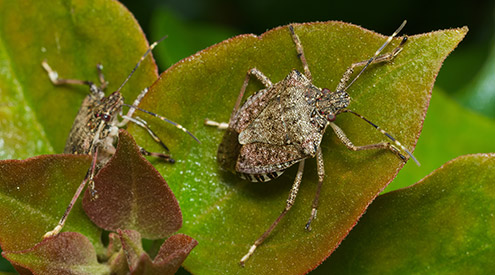
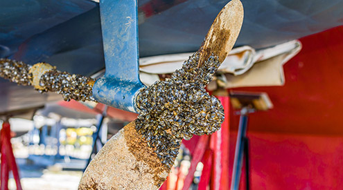

An invasive species is an introduced organism that becomes overpopulated and negatively alters its new environment. Although most introduced species are neutral or beneficial with respect to other species, invasive species adversely affect habitats and bioregions, causing ecological, environmental, and/or economic damage. The term can be used for native species that become harmful within their native distribution due to human alterations of habitat and the environment. An example of a native invasive species is the purple sea urchin (Strongylocentrotus purpuratus) which has decimated kelp forests along the northern California coast due to overharvesting of its natural predator, the California sea otter (Enhydra lutris). In the 21st century, invasive species have become a serious economic, social, and environmental threat.
Invasion of long-established ecosystems by organisms is a natural phenomenon, but human-facilitated introductions have greatly increased the rate, scale, and geographic range of invasion. For millennia, humans have served as both accidental and deliberate dispersal agents, beginning with their earliest migrations, accelerating in the age of discovery, and accelerating again with international trade. Notable examples of invasive plant species include the kudzu vine, Andean pampas grass, English ivy, Japanese knotweed, and yellow starthistle. Animal examples include the New Zealand mud snail, feral pig, European rabbit, grey squirrel, domestic cat, carp, and ferret.
Some popular reference sources now name Homo sapiens, especially modern-age humans, as an invasive species, but broad appreciation of human learning capacity and their behavioral potential and plasticity argues against any such fixed categorization.

What Makes a Species "Invasive"?
An invasive species can be any kind of living organism—an amphibian (like the cane toad), plant, insect, fish, fungus, bacteria, or even an organism’s seeds or eggs—that is not native to an ecosystem and causes harm. They can harm the environment, the economy, or even human health. Species that grow and reproduce quickly, and spread aggressively, with potential to cause harm, are given the label “invasive.”
An invasive species does not have to come from another country. For example, lake trout are native to the Great Lakes, but are considered to be an invasive species in Yellowstone Lake in Wyoming because they compete with native cutthroat trout for habitat
How Invasive Species Spread
Invasive species are primarily spread by human activities, often unintentionally. People, and the goods we use, travel around the world very quickly, and they often carry uninvited species with them. Ships can carry aquatic organisms in their ballast water, while smaller boats may carry them on their propellers. Insects can get into wood, shipping palettes, and crates that are shipped around the world. Some ornamental plants can escape into the wild and become invasive. And some invasive species are intentionally or accidentally released pets. For example, Burmese pythons are becoming a big problem in the Everglades.
In addition, higher average temperatures and changes in rain and snow patterns caused by climate change will enable some invasive plant species—such as garlic mustard, kudzu, and purple loosestrife—to move into new areas. Insect pest infestations will be more severe as pests such as mountain pine beetle are able to take advantage of drought-weakened plants.

Threats to Native Wildlife
Invasive species cause harm to wildlife in many ways. When a new and aggressive species is introduced into an ecosystem, it may not have any natural predators or controls. It can breed and spread quickly, taking over an area. Native wildlife may not have evolved defenses against the invader, or they may not be able to compete with a species that has no predators.
The direct threats of invasive species include preying on native species, outcompeting native species for food or other resources, causing or carrying disease, and preventing native species from reproducing or killing a native species' young.
There are indirect threats of invasive species as well. Invasive species can change the food web in an ecosystem by destroying or replacing native food sources. The invasive species may provide little to no food value for wildlife. Invasive species can also alter the abundance or diversity of species that are important habitat for native wildlife. Aggressive plant species like kudzu can quickly replace a diverse ecosystem with a monoculture of just kudzu. Additionally, some invasive species are capable of changing the conditions in an ecosystem, such as changing soil chemistry or the intensity of wildfires.
Examples of invasive species
COMBATTING INVASIVE SPECIES
Invasive species cause harm to wildlife in many ways. When a new and aggressive species is introduced into an ecosystem, it may not have any natural predators or controls. It can breed and spread quickly, taking over an area. Native wildlife may not have evolved defenses against the invader, or they may not be able to compete with a species that has no predators.
The direct threats of invasive species include preying on native species, outcompeting native species for food or other resources, causing or carrying disease, and preventing native species from reproducing or killing a native species' young.
There are indirect threats of invasive species as well. Invasive species can change the food web in an ecosystem by destroying or replacing native food sources. The invasive species may provide little to no food value for wildlife. Invasive species can also alter the abundance or diversity of species that are important habitat for native wildlife. Aggressive plant species like kudzu can quickly replace a diverse ecosystem with a monoculture of just kudzu. Additionally, some invasive species are capable of changing the conditions in an ecosystem, such as changing soil chemistry or the intensity of wildfires.
The best way to fight invasive species is to prevent them from occurring in the first place. You can help stop the introduction and spread of invasive species. Help protect native plants and animals by following these six easy guidelines:
- Verify that the plants you are buying for your yard or garden are not invasive. Replace invasive plants in your garden with non-invasive alternatives. Ask your local
nursery staff for help in identifying invasive plants!
- When boating, clean your boat thoroughly before transporting it to a different body of water.
- Clean your boots before you hike in a new area to get rid of hitchhiking weed seeds and pathogens.
- Don't "pack a pest" when traveling. Fruits and vegetables, plants, insects and animals can carry pests or become invasive themselves. Don't move firewood (it can harbor forest pests), clean your bags and boots after each hike, and throw out food before you travel from place to place.
- Don't release aquarium fish and plants, live bait or other exotic animals into the wild. If you plan to own an exotic pet, do your research and plan ahead to make sure you can commit to looking after it.
- Volunteer at your local park, refuge or other wildlife area to help remove invasive species.